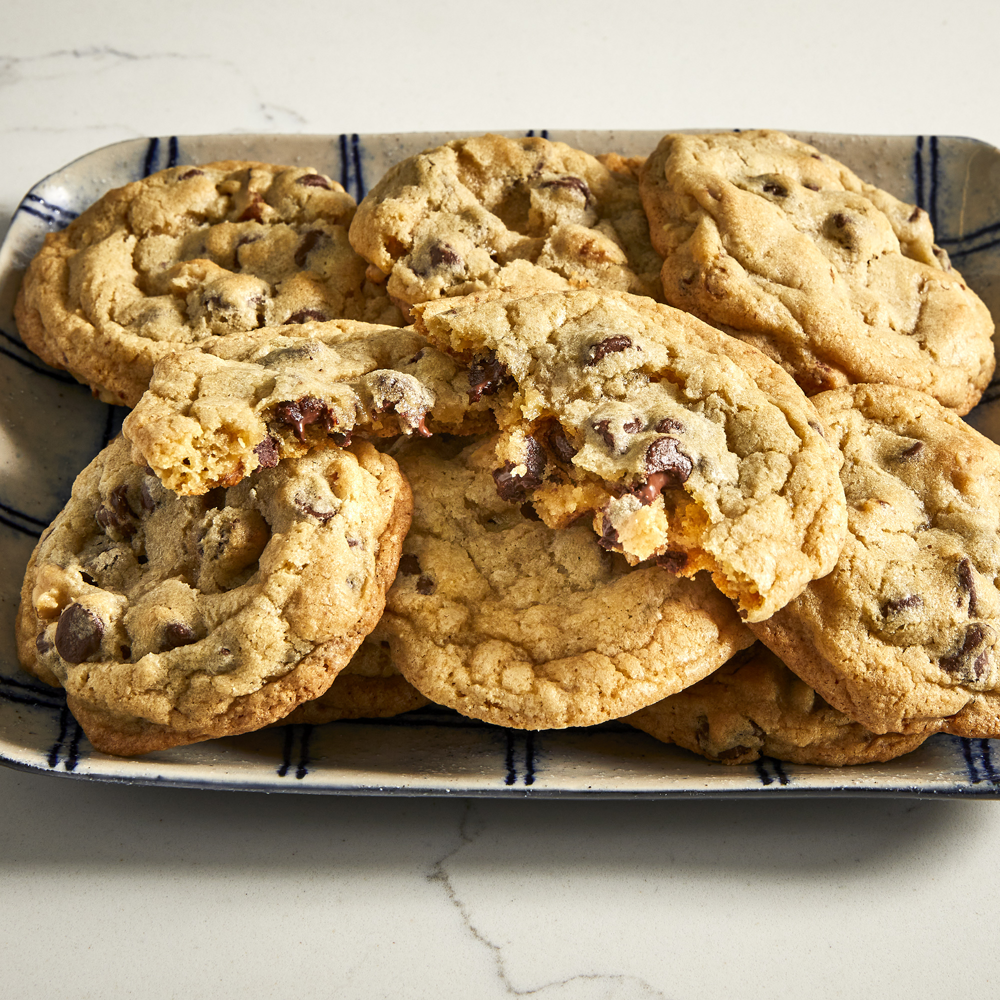

Cookies Worth $250,000!

These Cookies are said to worth over two-hundred thousand dollars!
You may have heard this story...a woman asks to buy a cookie recipe and is told it will cost 'two-fifty.' She thinks this means $2.50, but then she gets her credit card bill back and finds out it is $250.00. Outraged, she spreads the recipe far and wide to try and get her money's worth.
I first heard this story 6 years ago and was given a recipe on a sheet of paper which bore the date '1986.' The supposed originator of the recipe was a well-known cookie company.
I have since heard this tale again several times, with the recipe originating from different upscale department stores.
True story? Who knows, but it's a darn good cookie.
Ingredients
- 1 cup butter, softened
- 1 cup white sugar
- 1 cup packed brown sugar
- 2 eggs
- 1 teaspoon vanilla extract
- 2 cups all-purpose flour
- 2½ cups rolled oats
- ½ teaspoon salt
- 1 teaspoon baking powder
- 1 teaspoon baking soda
- 2 cups semisweet chocolate chips
- 4 ounces milk chocolate, grated
- 1½ cups chopped walnuts
Steps
- Preheat oven to 375 degrees F (190 degrees C). Measure oats into a blender or food processor, and then blend to a fine powder. Set aside.
- In a large bowl, cream together butter and sugars. Beat in the eggs one at a time, then stir in the vanilla. In a separate bowl, mix together flour, oats, salt, baking powder,
and baking soda. Stir dry ingredients into creamed butter and sugar. Add chocolate chips, grated chocolate, and nuts.
- Drop by rounded teaspoons onto ungreased cookie sheets. Bake for 6 to 8 minutes in the preheated oven.